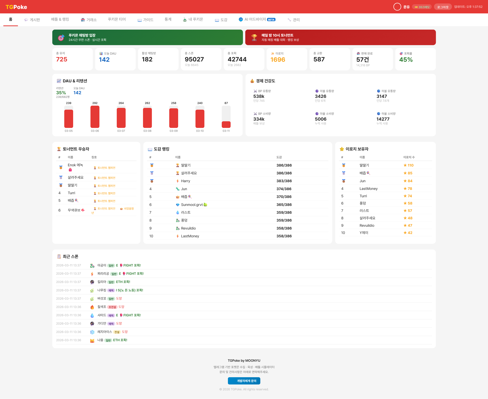
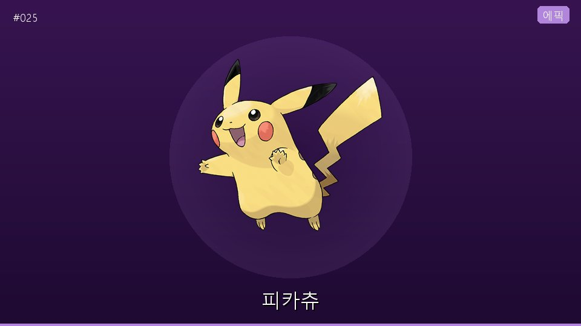
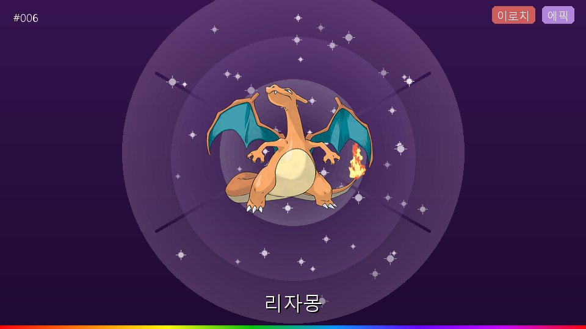
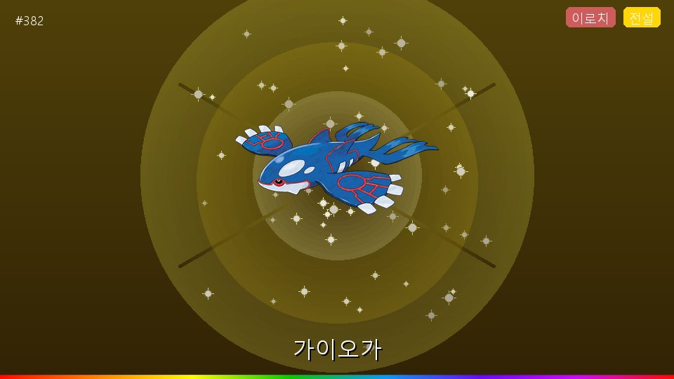
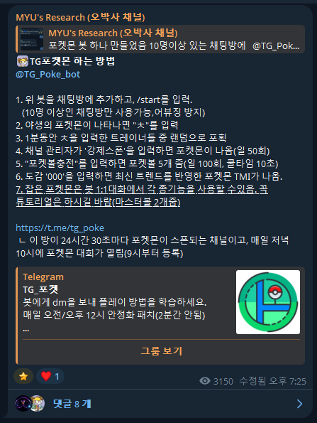
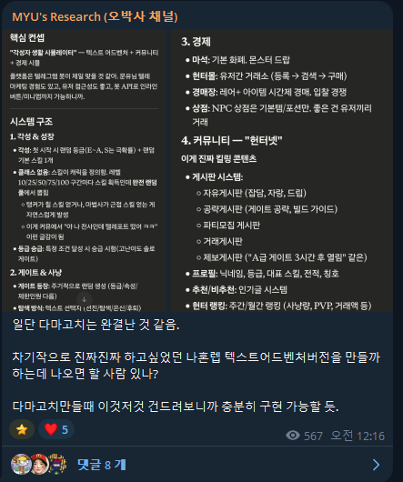
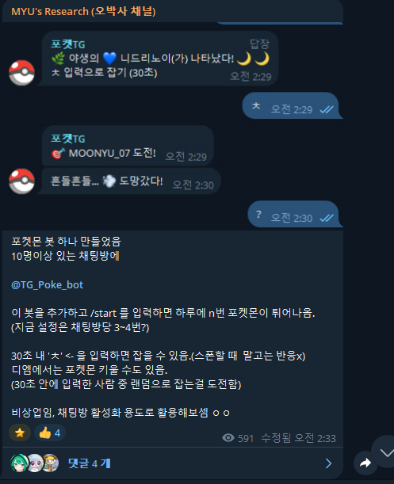
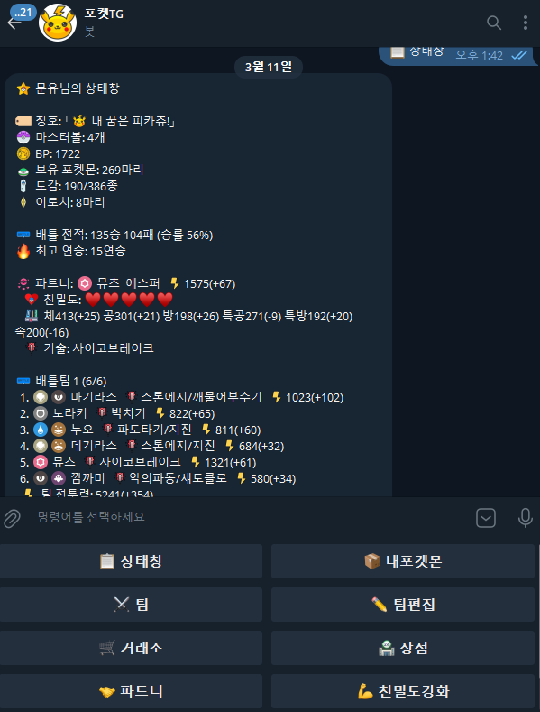
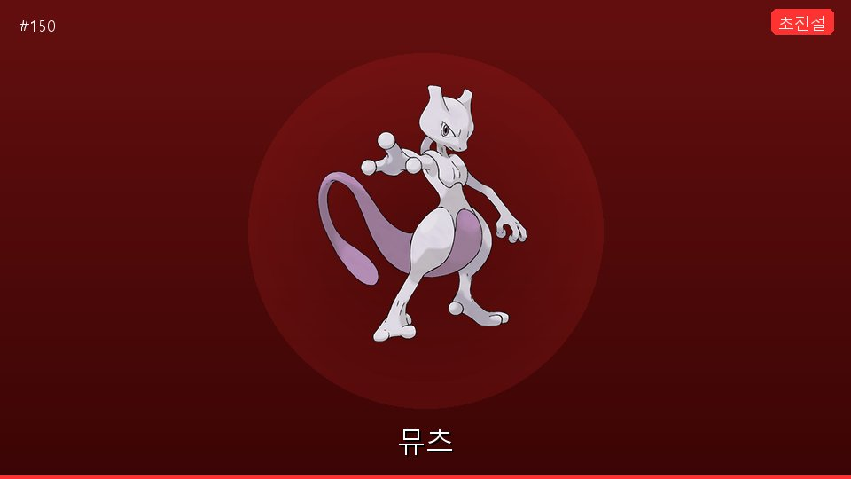

비개발자가 Claude로 9일 만에 텔레그램 포켓몬 봇을 만들어 운영한 과정과 결과
01
텔레그램 채팅방에서 동작하는 포켓몬 수집/배틀/거래 봇.
코인 채팅방의 체류 시간을 늘리기 위한 목적으로 기획했다.
| 항목 | 수치 |
|---|---|
| DB 테이블 | 20개+ |
| 명령어 수 | 40개+ |
| 포켓몬 종류 | 386종 (1~3세대) |
| 고유 스킬 | 386개 (포켓몬당 1개) |

02
텔레그램 코인 채팅방은 시세가 나쁘면 조용해지고, 조용해지면 사람이 빠지고, 사람이 빠지면 방이 죽는다.
채팅방 안에 포켓몬 수집 게임을 넣으면, 시세와 관계없이 사람들이 온다.
03
채팅방에서 포켓몬이 스폰되면 이런 카드 이미지가 표시된다.
등급별 색상, 이로치(특별 포켓몬) 이펙트까지 전부 자동 생성.



04
나는 코드를 읽지도, 쓰지도 않았다.
대신 "이런 경험을 만들어야 한다"를 구체적으로 설명했다.
런칭 하루 만에 유저가 200명이 됐다.
처음엔 맥미니에서 돌리고 있었는데, AI 채팅 CS 기능까지 넣으려고 했다가 "굳이?" 싶어서 가상서버(Oracle Cloud)로 이전하기로 했다.
서버를 옮기는 과정에서 DB가 전부 날아갔다.
200명의 유저가 잡은 포켓몬, 도감, 전부 초기화.
철면피로 밀어붙였다.
그리고 오히려 바이럴이 됐다.
그 뒤부터 텔레그램 내에서 바이러스처럼 퍼지기 시작했다.
봇 활성화 조건이 "10명 이상 채팅방"이다 보니, 포켓몬 파밍만을 위한 10명짜리 소규모 방이 자생적으로 만들어졌다.
이름만 봐도 포켓몬 파밍을 위해 만든 방이라는 게 보인다.
182개 채팅방 중 상당수가 이렇게 자발적으로 만들어진 방이다.
마케팅 비용 0원. 유저가 유저를 데려오는 구조가 만들어졌다.
도메인 이해와 유저 감각이 프롬프트의 품질을 결정한다.
| 방식 | 사이클 |
|---|---|
| 기존 개발 | 이슈 → 스프린트 → 개발 → QA → 배포 (일~주 단위) |
| 바이브코딩 | 피드백 → Claude → 수정 → 배포 (분 단위) |
유저 피드백에서 배포까지 5분이면, 유저는 "내 말이 반영됐다"고 느낀다.
이게 초기 리텐션을 만들었다.
대시보드를 보다가 문제를 발견했다.
채팅 게임 특성상 가이드가 부실했다. 처음 온 사람은 뭘 해야 하는지 모른다.
포켓몬은 랜덤 확률로 포획되는데, 첫 시도에 실패하면 "뭐야 안 되네" 하고 떠나버린다.
KPI가 문제를 보여줬고, 바로 고쳤다:

이게 바이브코딩의 진짜 힘이다.
데이터 → 가설 → 구현 → 검증을 하루 안에 돌릴 수 있다.
PM이 직접 대시보드를 보고, 바로 AI에게 수정을 요청하고, 바로 배포한다.
사실 포켓몬 봇 전에, 진짜 하고 싶었던 프로젝트가 있었다.

시스템 구조까지 다 설계했다. 각성 & 성장, 게이트 & 사냥, 경제, 커뮤니티.
그리고 채팅방에 물어봤다.
반응이 없었다.
"아, 여기 사람들은 이쪽에 관심이 없구나." — 바로 접었다.
하지만 여기서 멈추지 않았다. 바로 다음 질문으로 넘어갔다.
채팅방들을 빠르게 리서치했다.
여기서 연결이 됐다.
소셜 배틀 + 수집 + 포켓몬 30주년 → 텔레그램 포켓몬 봇.
바로 Claude를 켰다.
그리고 채팅방에 올렸다.

텍스트 어드벤처 아이디어 → 리서치 → 포켓몬 기획 → 봇 완성.
기획 1시간, 개발 1시간. 총 2시간.
05
* tgpoke.com 대시보드 + 관리자 패널 실시간 데이터

06
코딩을 모르는 사람이 바이브코딩으로 구현한 기능들:
| 기능 | 내부 구현 |
|---|---|
| 실시간 스폰/포획 | asyncio 기반 비동기 처리, 동시 포획 경쟁 핸들링 |
| 4페이즈 배틀 | 상태머신 기반 턴제 엔진, 타입 상성 테이블, 고유 스킬 효과 시스템 |
| ELO 랭크전 | ELO 레이팅 알고리즘, 시즌 리셋, 자동 매칭 |
| 유저 간 거래소 | PostgreSQL 트랜잭션, 동시성 제어, 재화 정합성 보장 |
| 포켓몬 합성 | IV 유전 로직, 확률 기반 결과, 재료 소멸 처리 |
| 웹 대시보드 | Flask + Jinja2 SPA, 실시간 DB 연동, Cloudflare 터널 |
| 봇 메시지 자동삭제 | asyncio.create_task로 딜레이 삭제 스케줄링 |
| 인라인 UI 상태머신 | CallbackQuery 패턴 라우팅, 페이지네이션, 중복 클릭 방지 |
| 포켓몬 이미지 | 웹 크롤링으로 386종 이미지 수집 → 카드 이미지 자동 생성 |

나는 이 중 어떤 것도 직접 코딩하지 않았다.
하지만 "이런 경험이 필요하다"를 정확히 설명했고, Claude가 구현했다.
코딩을 해본 적이 없기 때문에 느낀 건데:
배경지식이 없다는 건, 오히려 "이건 원래 안 돼"라는 선입견이 없다는 뜻이다.
AI에게 상식을 벗어난 요청을 하면, AI는 의외로 해결책을 찾는다.
그 과정에서 AI가 시니어급 이상의 창의적인 해법을 내놓는 경우도 있었다.
나는 유튜브나 구글링을 아예 안 한다.
모르는 건 전부 AI에게 물어본다. 기술 질문도, 기획 검증도, 래퍼런스 조사도.
이 과정을 겪으면서, "바이브코더"라는 말이 맞지 않다고 느꼈다.
코더는 코드를 쓰는 사람이다. 나는 코드를 쓰지 않는다.
그렇다고 AI에게 "다 시키는" 것도 아니다.
내가 한 일을 정리하면:
이건 코딩이 아니다. 디렉팅이다.
결국 내가 깨달은 건:
기획, 아이디어, 생각할 수 있는 힘이 개발에 있어 가장 필요한 것 아닐까?
코딩 능력은 AI가 민주화했다.
남은 차별화 요소는 "뭘 만들지 아는 것"과 "AI와 티키타카할 수 있는 능력"이다.
개발자분들은 이미 기술적 깊이가 있으니,
여기에 바이브코딩을 더하면 프로토타이핑과 반복 속도가 한 차원 빨라질 수 있습니다.